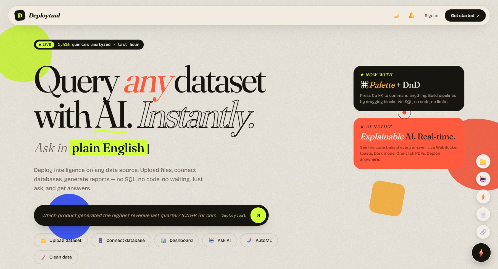

01 / AI ANALYTICS PLATFORM
Jun 2026 – Present

Deploytual
Deploy intelligence. Any data. Anywhere.
PROBLEM
Organizations struggle to turn heterogeneous data into analysis without manually writing pipelines, SQL, or ML code. Analysts and engineers waste significant time stitching tools together instead of answering business questions.
ARCHITECTURE
User
↓
FastAPI (API Layer)
↓
Agent / Orchestrator (Lang-style routing)
↓
┌──────────────┬──────────────┬──────────────┐
│ Data Pipeline│ AutoML │ SQL Engine │
│ (ETL + Clean)│ (Anomaly + │ (NL → SQL) │
│ │ Forecast) │ │
└──────┬───────┴──────┬───────┴──────┬───────┘
└──────────────┼──────────────┘
↓
Insights + PDF Report
↓
Docker → Render / Netlify / K8s
ENGINEERING
- • Natural Language → Executable Analysis: Converts plain-English questions into Pandas operations or SQL, then executes them against uploaded or connected data sources.
- • End-to-End Pipeline Orchestration: Chains data cleaning → anomaly detection (Isolation Forest) → forecasting (Prophet) → executive PDF generation in a single workflow.
- • Explainable AI Layer: Every answer surfaces the exact code/SQL used, plus text-to-speech narration for accessibility.
- • Production Deployment: Fully Dockerized with CI/CD. Supports Kubernetes + Helm. Live on Render (API) and Netlify (frontend).
ENGINEERING DECISIONS
- • Why FastAPI? Async-friendly, automatic OpenAPI docs, and excellent for building agent-facing APIs quickly.
- • Why container-first? The goal was “deploy anywhere” — Docker + Helm makes the system portable across client environments.
- • Why expose the generated code? Trust and debuggability matter more than black-box answers in analytics tools.